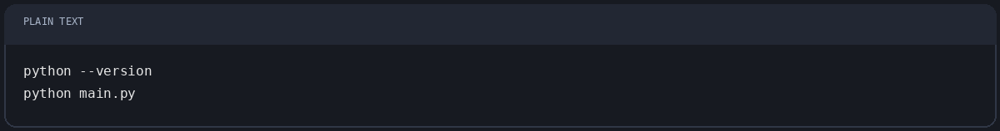
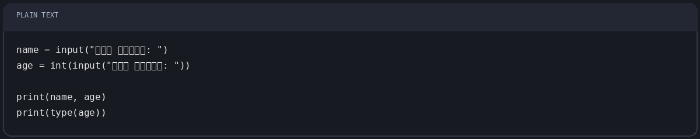
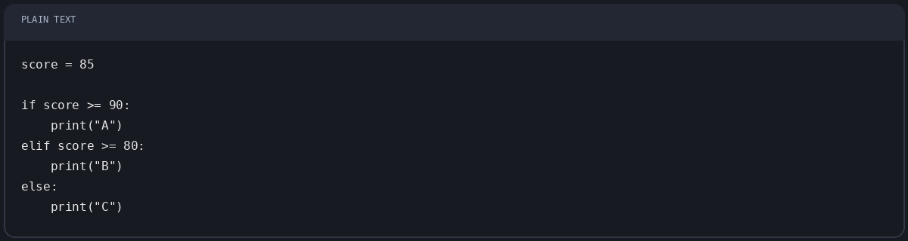
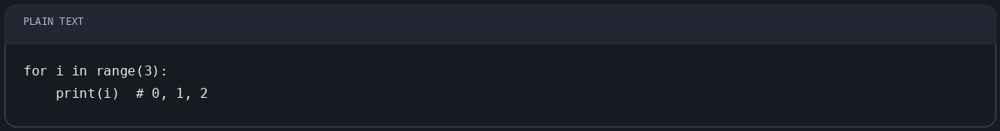
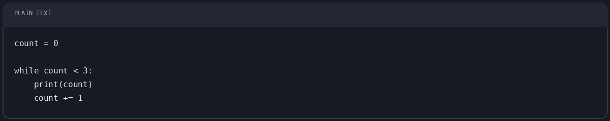

📚 2주차 Python 기초&심화 문법 (2026.10.15 Thu ~ 2026.10.20 Tue)
Total : 4 days
📕 A. Python Intro (2026.10.15 Thu)
📃 a. Python (파이썬 소개 및 IDE 설치)
- Python : 문법이 간결하고 AI, 데이터 분석, 자동화 등에 널리 사용되는 프로그래밍 언어
- IDE : 코드 작성, 실행, 디버깅 등을 지원하는 개발 환경
- 주요 활용 : AI·머신러닝, 데이터 분석, 로봇 제어, 업무 자동화
📃 b. Visual Studio Code (VS Code 설치와 실행법)
- VS Code : 확장 기능을 통해 Python 개발 환경을 구성할 수 있는 코드 편집기
- Python Extension : Python 코드 실행 및 디버깅 지원
- 터미널 : 명령어를 입력해 Python 프로그램 실행

📃 c. Input and Output (입력과 출력, 변수와 데이터 타입)
- 변수(Variable) : 데이터를 저장하는 이름
- 입력(Input) :
input()으로 사용자 입력 받기 - 출력(Output) :
print()로 결과 출력 - 데이터 타입(Data Type) : 데이터의 종류
| 타입 | 의미 | 예시 |
|---|---|---|
int | 정수 | 10 |
float | 실수 | 3.14 |
str | 문자열 | "Robot" |
bool | 참·거짓 | True, False |
list | 여러 값을 저장하는 목록 | [1, 2, 3] |

※ input()은 기본적으로 문자열(str)을 반환하므로 숫자로 사용하려면 int() 또는 float()으로 변환해야 합니다.
📃 d. Operators (산술, 비교, 논리, 멤버십 연산자)
- 산술 연산자 : 수학적 계산
- 비교 연산자 : 두 값의 크기나 동일 여부 비교
- 논리 연산자 : 여러 조건을 조합
- 멤버십 연산자 : 특정 값이 데이터에 포함되어 있는지 확인
| 종류 | 연산자 | 예시 |
|---|---|---|
| 산술 | +, -, *, /, //, %, ** | 10 % 3 → 1 |
| 비교 | ==, !=, >, <, >=, <= | 10 > 5 → True |
| 논리 | and, or, not | True and False → False |
| 멤버십 | in, not in | "a" in "cat" → True |
📃 e. Conditionals (조건문)
- 조건문 : 조건의 참·거짓에 따라 실행할 코드를 결정
if: 조건이 참일 때 실행elif: 다른 조건 추가else: 앞선 조건이 모두 거짓일 때 실행- Python은 들여쓰기(Indentation) 로 코드 블록을 구분

📃 f. Loops (반복문)
- 반복문 : 동일한 작업을 여러 번 실행
for: 시퀀스의 항목을 순서대로 반복while: 조건이 참인 동안 반복range(): 숫자 범위를 생성


break: 반복문 종료continue: 현재 반복을 건너뛰고 다음 반복으로 이동
💡 핵심 요약
- Python : AI·데이터 분석·로봇 개발에 활용되는 프로그래밍 언어
- VS Code : Python 코드 작성 및 실행 환경
- Input / Output & Data Types : 데이터 입력·출력과 자료형 이해
- Operators : 계산, 비교, 논리 판단 및 포함 여부 확인
- Conditionals : 조건에 따라 코드 실행
- Loops : 반복 작업 자동화
🎯 학습 목표: Python의 기본 자료형과 연산자를 이해하고, 조건문과 반복문을 활용해 간단한 프로그램을 작성할 수 있다.